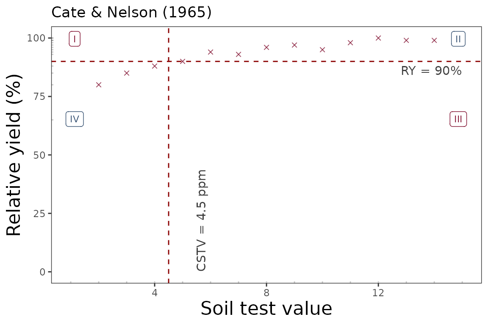
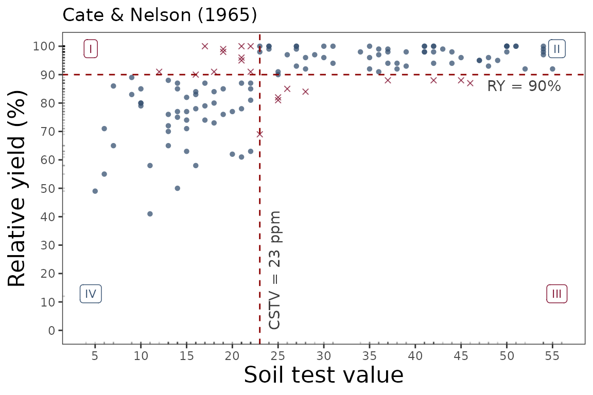
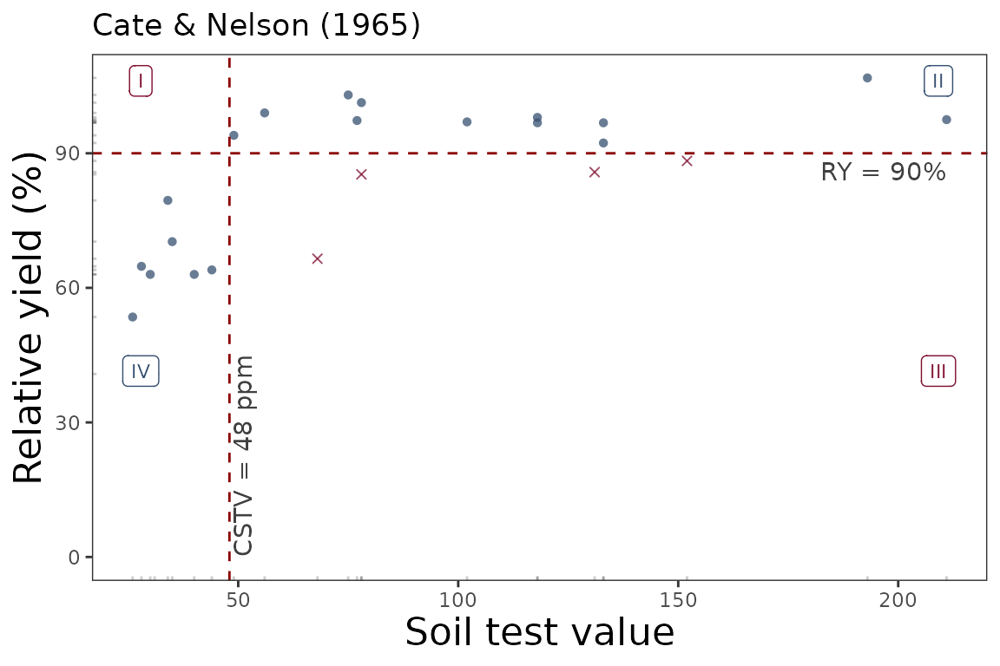

Cate and Nelson (1965)
Adrian Correndo
Source:vignettes/cate_nelson_1965_tutorial.Rmd
cate_nelson_1965_tutorial.Rmd
Description
The soiltestcorr-package also allows users to implement
the quadrants analysis approach, also known as the Cate-Nelson analysis.
This tutorial is intended to show how to deploy the
cate_nelson_1965() function for estimating critical soil
test values based on Cate and Nelson (1965). This approach is also known
as the “graphical” version of the Cate-Nelson analysis. This method
applies an arbitrary fixed value of ry as a target (y-axis) that divides
the data into two categories (below & equal or above ry target). In
a second stage, it estimates the CSTV (x-axis) as the minimum stv that
divides the data into four quadrants (target ry level combined with STV
lower or greater than the CSTV) maximizing the number of points under
well-classified quadrants (II, stv >= CSTV & ry >= ry target;
and IV, stv < CSTV & ry < RY target).
General Instructions
Load your dataframe with soil test value (stv) and relative yield (ry) data.
Specify the following arguments into the function -cate_nelson_1965()-:
(a). data (optional),
(b). stv (soil test value) and ry (relative
yield) columns or vectors,
(c). plot TRUE (produces a ggplot as main output) or
FALSE (DEFAULT, only produces a list or data.frame),
(d). tidy TRUE (produces a data.frame with results) or
FALSE (store results as list),
Run and check results.
Adjust plot as desired.
Tutorial
Suggested packages
# Install if needed
library(ggplot2) # Plots
library(dplyr) # Data wrangling
library(tidyr) # Data wrangling
library(utils) # Data wrangling
library(purrr) # MappingThis is a basic example using three different datasets:
Load datasets
# Example 1 dataset
# Fake dataset manually created
data_1 <- data.frame("RY" = c(65,80,85,88,90,94,93,96,97,95,98,100,99,99,100),
"STV" = c(1,2,3,4,5,6,7,8,9,10,11,12,13,14,15))
# Example 2. Native fake dataset from soiltestcorr package
data_2 <- soiltestcorr::data_test
# Example 3. Native dataset from soiltestcorr package, Freitas et al. (1966), used by Cate & Nelson (1971)
data_3 <- soiltestcorr::freitas1966Fit cate_nelson_1965()
1. Individual fits
RY target = 90%, replace with your desired value
1.1. tidy = FALSE
It returns a LIST (more efficient for multiple fits at once)
# Using dataframe argument, tidy = FALSE -> return a LIST
fit_1_tidy_false <-
soiltestcorr::cate_nelson_1965(data = data_1,
ry = RY,
stv = STV,
target = 90,
tidy = FALSE,
plot = FALSE)
#> Warning in stats::chisq.test(data.frame(row.1, row.2)): Chi-squared
#> approximation may be incorrect
utils::head(fit_1_tidy_false)
#> $n
#> [1] 15
#>
#> $CRYV
#> [1] 90
#>
#> $CSTV
#> [1] 4.5
#>
#> $R2
#> [1] 0.6697782
#>
#> $AIC
#> [1] 98.39784
#>
#> $BIC
#> [1] 100.5221.2. tidy = TRUE
It returns a data.frame (more organized results)
# Using dataframe argument, tidy = FALSE -> return a LIST
fit_1_tidy_false <-
soiltestcorr::cate_nelson_1965(data = data_1,
ry = RY,
stv = STV,
target = 90,
tidy = TRUE)
#> Warning in stats::chisq.test(data.frame(row.1, row.2)): Chi-squared
#> approximation may be incorrect
utils::head(fit_1_tidy_false)
#> # A tibble: 1 × 8
#> n CRYV CSTV R2 AIC BIC RMSE quadrants$q.I $q.II $q.III $q.IV
#> <int> <dbl> <dbl> <dbl> <dbl> <dbl> <dbl> <int> <int> <int> <int>
#> 1 15 90 4.5 0.670 98.4 101. 5.26 0 11 0 4
#> # ℹ 2 more variables: quadrants$positive <int>, $negative <int>1.3. Alternative using the vectors
You can call stv and ry vectors using the
$.
The tidy argument still applies for controlling the
output type
fit_1_vectors_list <-
soiltestcorr::cate_nelson_1965(ry = data_1$RY,
stv = data_1$STV,
target=90,
tidy = FALSE)
#> Warning in stats::chisq.test(data.frame(row.1, row.2)): Chi-squared
#> approximation may be incorrect
fit_1_vectors_tidy <-
soiltestcorr::cate_nelson_1965(ry = data_1$RY,
stv = data_1$STV,
target=90,
tidy = TRUE)
#> Warning in stats::chisq.test(data.frame(row.1, row.2)): Chi-squared
#> approximation may be incorrect1.4. Data 2. Test dataset
fit_2 <-
soiltestcorr::cate_nelson_1965(data = data_2,
ry = RY,
stv = STV,
target = 90,
tidy = TRUE)
utils::head(fit_2)
#> # A tibble: 1 × 8
#> n CRYV CSTV R2 AIC BIC RMSE quadrants$q.I $q.II $q.III $q.IV
#> <int> <dbl> <dbl> <dbl> <dbl> <dbl> <dbl> <int> <int> <int> <int>
#> 1 137 90 23 0.394 1056. 1065. 11.2 11 67 9 50
#> # ℹ 2 more variables: quadrants$positive <int>, $negative <int>1.5. Data 3. Freitas et al. 1966
fit_3 <-
soiltestcorr::cate_nelson_1965(data = data_3,
ry = RY,
stv = STK,
target = 90,
tidy = TRUE)
#> Warning in stats::chisq.test(data.frame(row.1, row.2)): Chi-squared
#> approximation may be incorrect
utils::head(fit_3)
#> # A tibble: 1 × 8
#> n CRYV CSTV R2 AIC BIC RMSE quadrants$q.I $q.II $q.III $q.IV
#> <int> <dbl> <dbl> <dbl> <dbl> <dbl> <dbl> <int> <int> <int> <int>
#> 1 24 90 48 0.707 183. 186. 9.64 0 12 4 8
#> # ℹ 2 more variables: quadrants$positive <int>, $negative <int>2. Multiple fits at once
2.1. Using map
Fit
# Run multiple examples at once with map()
fit_multiple_map = data.all %>%
dplyr::mutate(mod_alcc = purrr::map(data, ~ soiltestcorr::cate_nelson_1965(ry = .$RY,
stv = .$STV,
target=90,
tidy = TRUE)))
#> Warning: There were 2 warnings in `dplyr::mutate()`.
#> The first warning was:
#> ℹ In argument: `mod_alcc = purrr::map(...)`.
#> Caused by warning in `stats::chisq.test()`:
#> ! Chi-squared approximation may be incorrect
#> ℹ Run `dplyr::last_dplyr_warnings()` to see the 1 remaining warning.
utils::head(fit_multiple_map)
#> # A tibble: 3 × 3
#> id data mod_alcc
#> <chr> <list> <list>
#> 1 1 <tibble [15 × 2]> <tibble [1 × 8]>
#> 2 2 <tibble [137 × 2]> <tibble [1 × 8]>
#> 3 3 <tibble [24 × 2]> <tibble [1 × 8]>2.2. Using group_map
Alternatively, with group_map, we do not require nested data.
However, it requires to dplyr::bind_rows and add an id
column specifying the name of each dataset.
This option return models as lists objects.
fit_multiple_group_map <-
data.all %>% tidyr::unnest(data) %>%
#dplyr::bind_rows(data_1, data_2, .id = "id") %>%
dplyr::group_by(id) %>%
dplyr::group_map(~ soiltestcorr::cate_nelson_1965(data = .,
ry = RY,
stv = STV,
target = 90,
tidy = TRUE))
#> Warning in stats::chisq.test(data.frame(row.1, row.2)): Chi-squared
#> approximation may be incorrect
#> Warning in stats::chisq.test(data.frame(row.1, row.2)): Chi-squared
#> approximation may be incorrect
utils::head(fit_multiple_group_map)
#> [[1]]
#> # A tibble: 1 × 8
#> n CRYV CSTV R2 AIC BIC RMSE quadrants$q.I $q.II $q.III $q.IV
#> <int> <dbl> <dbl> <dbl> <dbl> <dbl> <dbl> <int> <int> <int> <int>
#> 1 15 90 4.5 0.670 98.4 101. 5.26 0 11 0 4
#> # ℹ 2 more variables: quadrants$positive <int>, $negative <int>
#>
#> [[2]]
#> # A tibble: 1 × 8
#> n CRYV CSTV R2 AIC BIC RMSE quadrants$q.I $q.II $q.III $q.IV
#> <int> <dbl> <dbl> <dbl> <dbl> <dbl> <dbl> <int> <int> <int> <int>
#> 1 137 90 23 0.394 1056. 1065. 11.2 11 67 9 50
#> # ℹ 2 more variables: quadrants$positive <int>, $negative <int>
#>
#> [[3]]
#> # A tibble: 1 × 8
#> n CRYV CSTV R2 AIC BIC RMSE quadrants$q.I $q.II $q.III $q.IV
#> <int> <dbl> <dbl> <dbl> <dbl> <dbl> <dbl> <int> <int> <int> <int>
#> 1 24 90 48 0.707 183. 186. 9.64 0 12 4 8
#> # ℹ 2 more variables: quadrants$positive <int>, $negative <int>3. Bootstrapping
A suitable alternative for obtaining confidence intervals for
parameters or derived quantities is bootstrapping.
Bootstrapping is a resampling technique (with replacement) that draws
samples from the original data with the same size. If you have groups
within your data, you can specify grouping variables as arguments in
order to maintain, within each resample, the same proportion of
observations than in the original dataset.
This function returns a table with as many rows as the resampling size (n) containing the results for each resample.
boot_cn65 <- boot_cn_1965(data = data_3,
ry = RY, stv = STK, target = 90,
n = 99)
#> Warning: There were 89 warnings in `dplyr::mutate()`.
#> The first warning was:
#> ℹ In argument: `model = map(...)`.
#> ℹ In group 1: `boot_id = 1`.
#> Caused by warning in `stats::chisq.test()`:
#> ! Chi-squared approximation may be incorrect
#> ℹ Run `dplyr::last_dplyr_warnings()` to see the 88 remaining warnings.
boot_cn65 %>% dplyr::slice_head(., n=5)
#> # A tibble: 5 × 9
#> boot_id n CRYV CSTV R2 AIC BIC RMSE quadrants$q.I $q.II $q.III
#> <dbl> <int> <dbl> <dbl> <dbl> <dbl> <dbl> <dbl> <int> <int> <int>
#> 1 1 24 90 56 0.648 190. 194. 11.2 1 10 4
#> 2 2 24 90 132 0.341 202. 206. 14.5 4 7 0
#> 3 3 24 90 48 0.673 181. 184. 9.22 0 10 5
#> 4 4 24 90 56 0.761 177. 180. 8.51 1 16 1
#> 5 5 24 90 56 0.836 163. 167. 6.38 0 10 5
#> # ℹ 3 more variables: quadrants$q.IV <int>, $positive <int>, $negative <int>
# CSTV Confidence Interval
quantile(boot_cn65$CSTV, probs = c(0.025, 0.5, 0.975))
#> 2.5% 50% 97.5%
#> 34.95 49.00 124.35
# Plot
boot_cn65 %>%
ggplot2::ggplot(aes(x = CSTV))+
geom_histogram(color = "grey25", fill = "#9de0bf", bins = 10)
4. Plots
4.1. Calibration Curve
We can generate a ggplot with the same mod_alcc() function.
We just need to specify the argument plot = TRUE.
soiltestcorr::cate_nelson_1965(data = data_1,
ry = RY,
stv = STV,
target=90,
plot = TRUE)
soiltestcorr::cate_nelson_1965(data = data_2,
ry = RY,
stv = STV,
target=90,
plot = TRUE)
soiltestcorr::cate_nelson_1965(data = data_3,
ry = RY,
stv = STK,
target=90,
plot = TRUE)
References
Cate, R.B. Jr., and Nelson, L.A., 1965. A rapid method for
correlation of soil test analysis with plant response data. North
Carolina Agric. Exp. Stn., International soil Testing Series Bull.
No. 1.